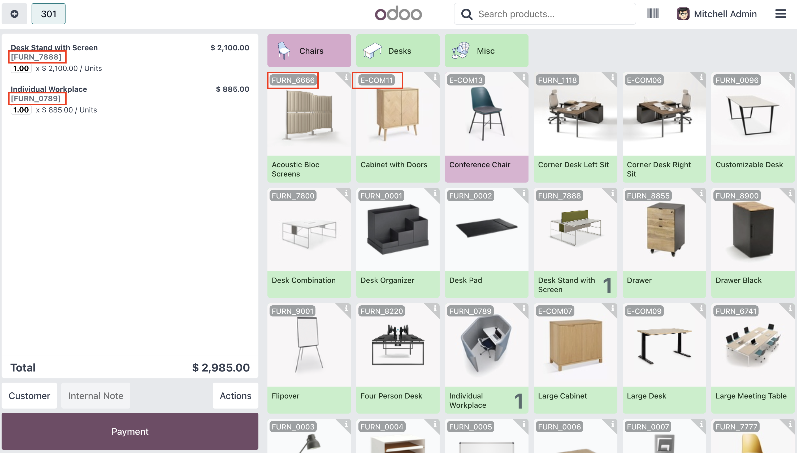
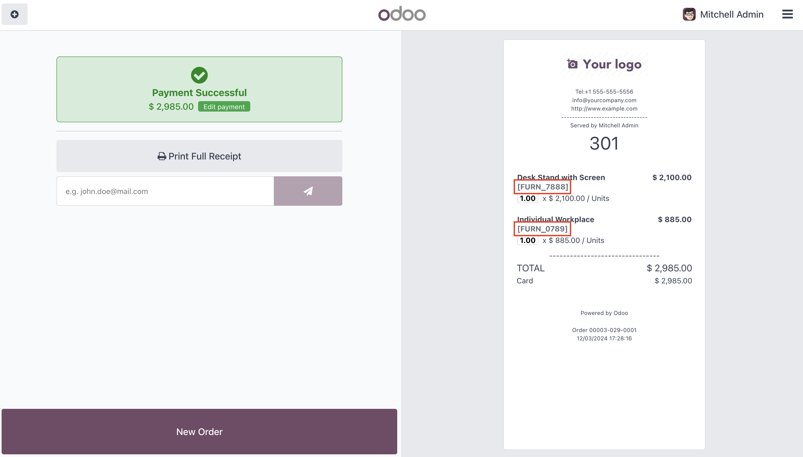
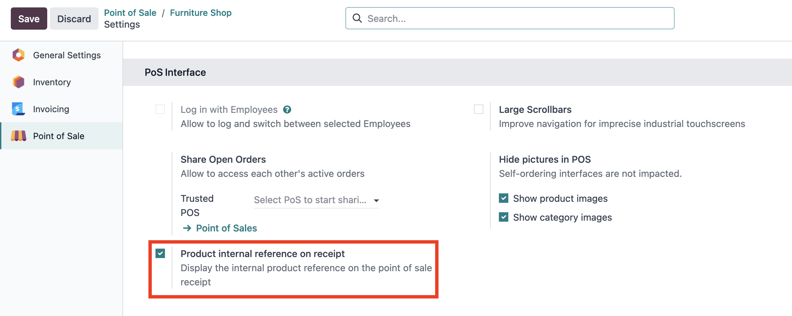

This module displays the internal product reference in the list and on the point of sale receipts.
App Features
- Displays the internal product reference in the product list.
- Displays the internal product reference in the order summary
- Displays the internal product reference on point of sale receipts
- You can configure at the point of sale whether or not to display the internal product reference on the receipts
- Compatible with community, enterprise and Odoo.sh version of Odoo
The internal product reference is shown in the list and in the cart summary

The internal product reference is shown on the receipts

Additionally you can configure whether or not to display the internal product reference on the point of sale receipts
